Mam do zaoferowania samochód marki Mazda model 6AT 2,5l (192 km) i-ELOOP z roku 2015 w wersji wyposażenia Skypassion (najwyższa w tamtym roku) w kolorze Jet Black. Samochód pochodzi z polskiego salonu. Kupiłem go od sąsiada w 2024 roku. On natomiast kupił go od szwagra, który zakupił go nowego w salonie w Białymstoku. Można więc powiedzieć, że kupując zminimalizowałem ryzyko zakupu samochodu po przygodach. Przed zakupem przeze mnie pojazd został sprawdzony w autoryzowanym salonie Mazda Kasai Motors w Bydgoszczy. Poniżej wypisałem wszystkie informacje jakie mam o pojeździe:
- do samochodu są dwa komplety kół (zimowe na oryginalnych alufelgach Mazdy w rozmiarze 17 cali oraz letnie także oryginalne Mazdy w rozmiarze 19 cali – na nich założone są prawie nowe opony z 2025 roku marki Nokian),
- samochód ma zabezpieczone podwozie przez Mazdę specjalną powłoką oraz dodatkowo jeszcze woskiem,
- pojazd ma oryginalny lakier za wyjątkiem lewego nadkola, zdjęć nie posiadam, gdyż stało się to za czasów poprzedniego właściciela, widziałem je na żywo, małe obtarcie do podkładu – zostało naprawione, brak jakiejkolwiek szpachli, jedynie druga powłoka lakieru, pozostałe elementy są oryginalne,
- samochód na prawych tylnych drzwiach z dołu posiada małe odpryski powstałe już u poprzedniego właściciela, ja nic z tym nie robiłem oraz przedni zderzak ma lekkie zadrapanie od dołu z lewej strony (zdjęcia załączone),
- do samochodu załączam dwa komplety kluczyków z pastylkami,
- do samochodu został dokupiony moduł Apple CarPlay/Android Auto,
- OC pojazdu do stycznia 2027 roku,
- jeżeli chodzi o serwis, pojazd do 2020 roku był serwisowany w Mazdzie, potem Sąsiad serwisował go w renomowanym warsztacie swojego kolegi w Bydgoszczy, jeżeli chodzi o serwisy przez okres mojego użytkowania pojazdu (na większość posiadam paragony):
* serwisy olejowe oraz wymiany wszystkich filtrów co 10 000 km,
* po zakupie wymieniony olej w skrzyni biegów w Mazda Kasai Motors Bydgoszcz,
* na wiosnę wykonany kompleksowy serwis klimatyzacji,
* w tym roku wymienione świece zapłonowe,
* ostatnio wymienione klocki hamulcowe z przodu oraz tyłu.
Samochód jest, jak na swój rok, w bardzo dobrym stanie wizualnym oraz technicznym. Wykonałem nim prawie 40 000 km i nigdy nie zapaliła się żadna kontrolka. Naprawdę bardzo pojemne oraz wygodne auto. Sprzedaję jedynie z powodu otrzymania samochodu służbowego. Pojazd z pewną historią, który będzie służył jeszcze przez wiele lat. Sądzę, że pierwsza osoba poważnie zainteresowana, która przyjedzie go zakupi.
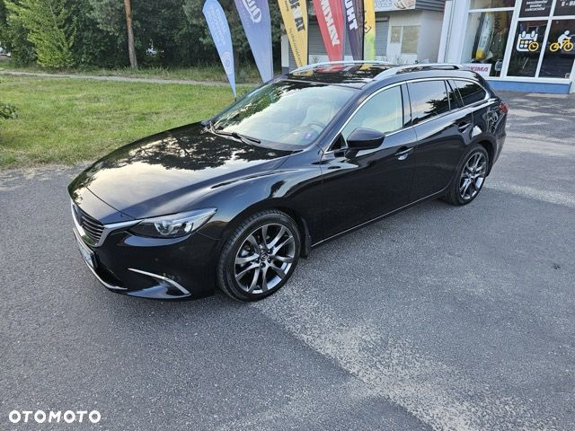
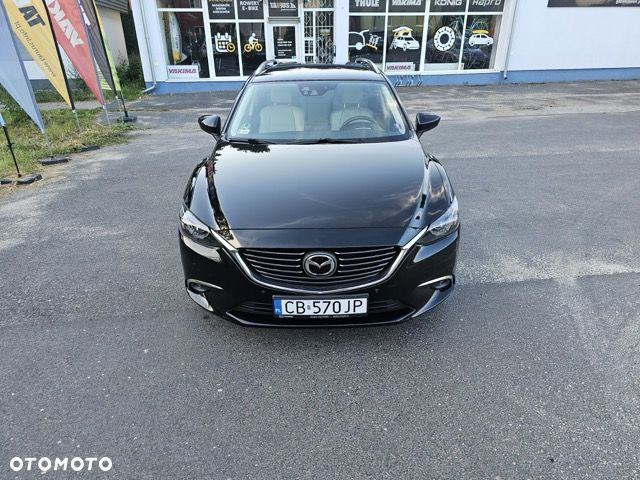
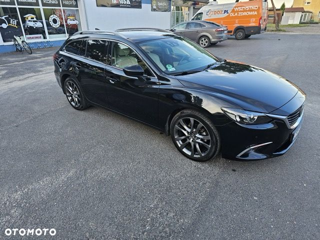
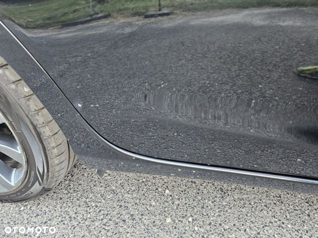
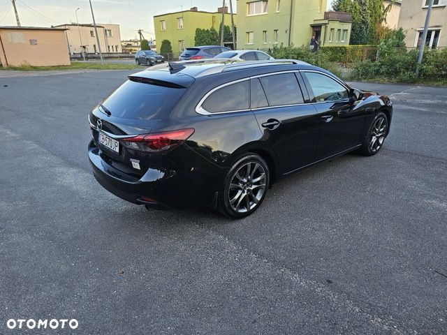
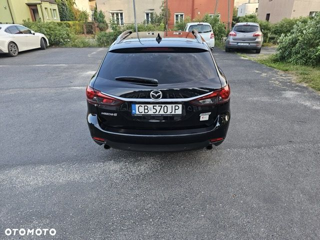
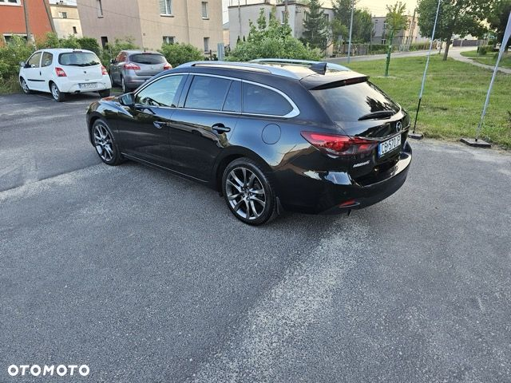
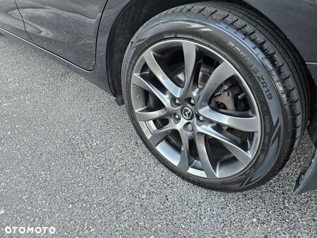
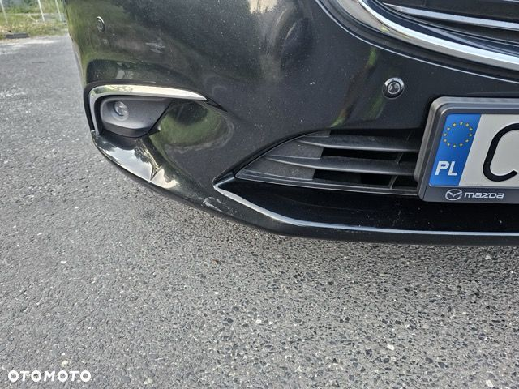
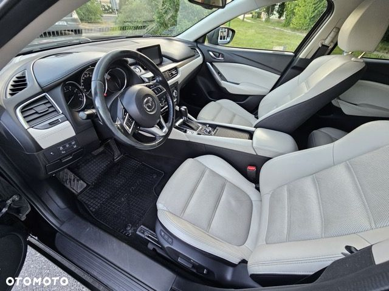
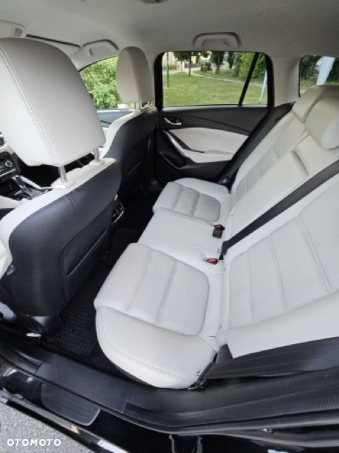
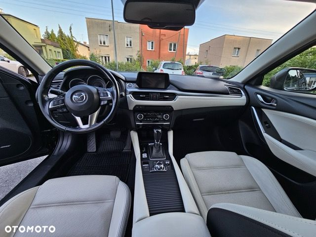
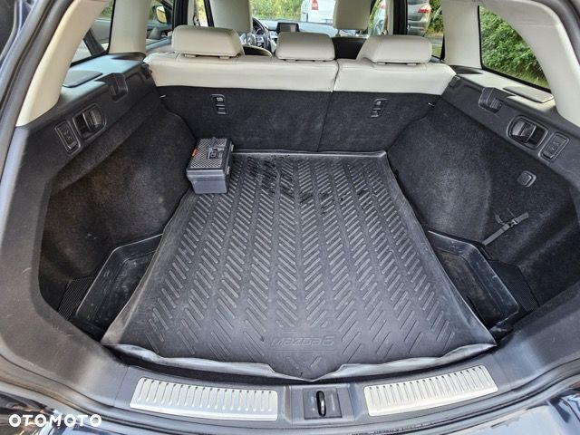
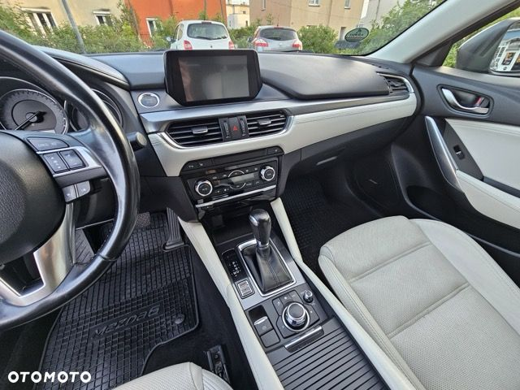
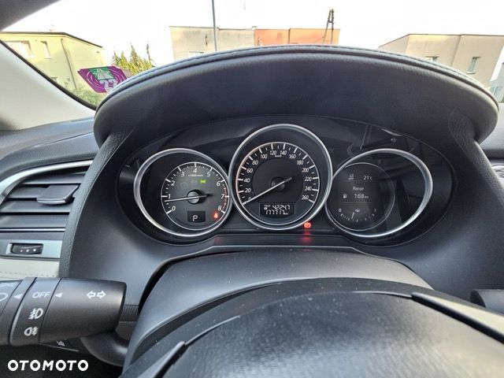